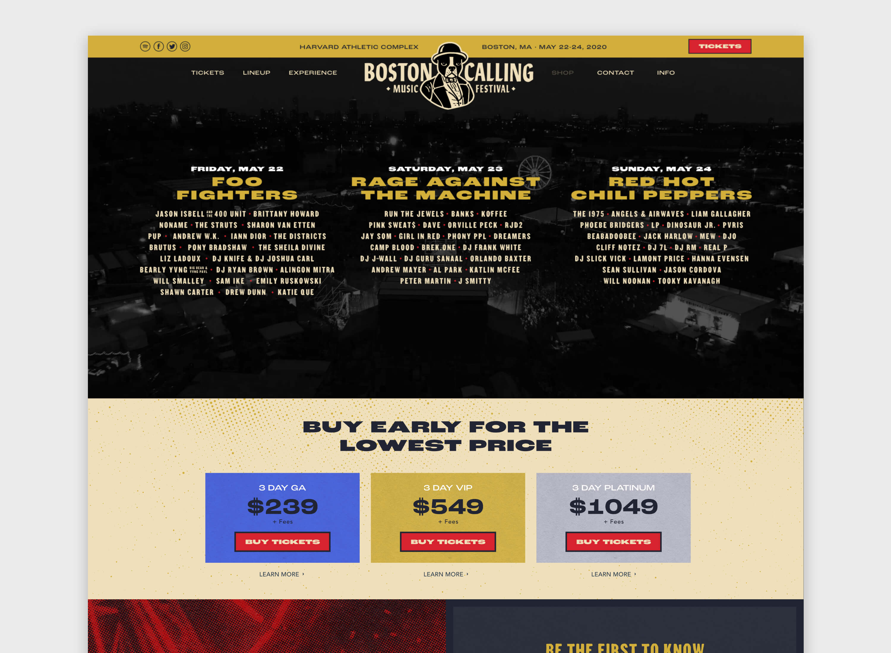
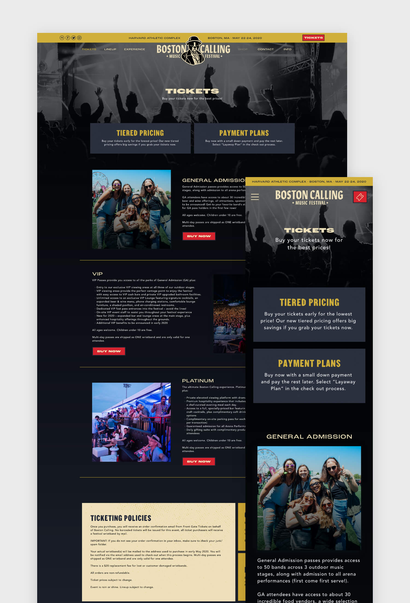
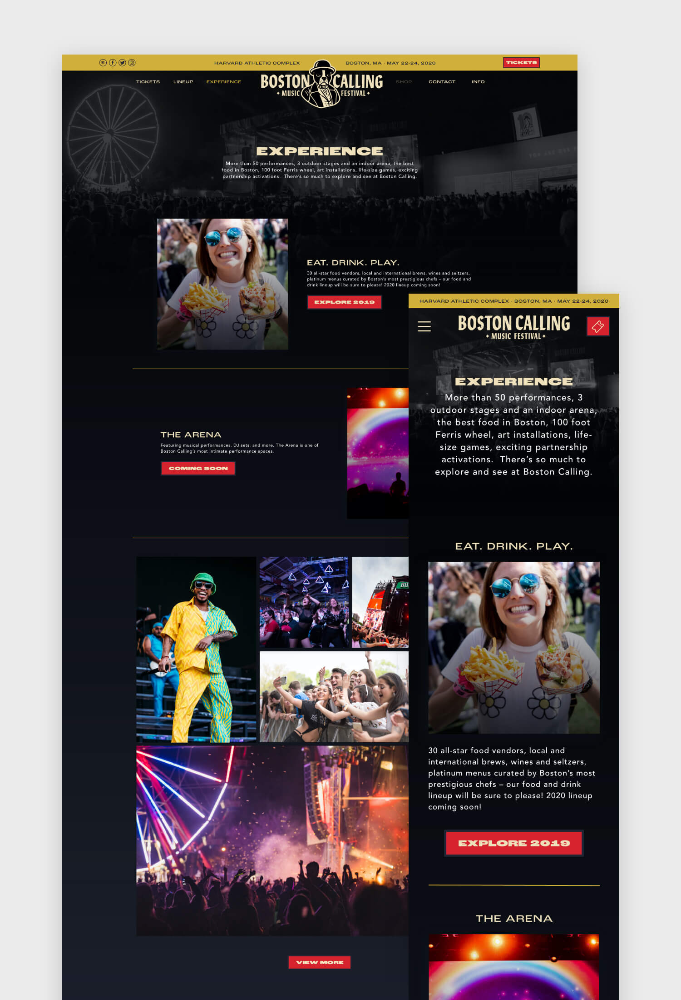
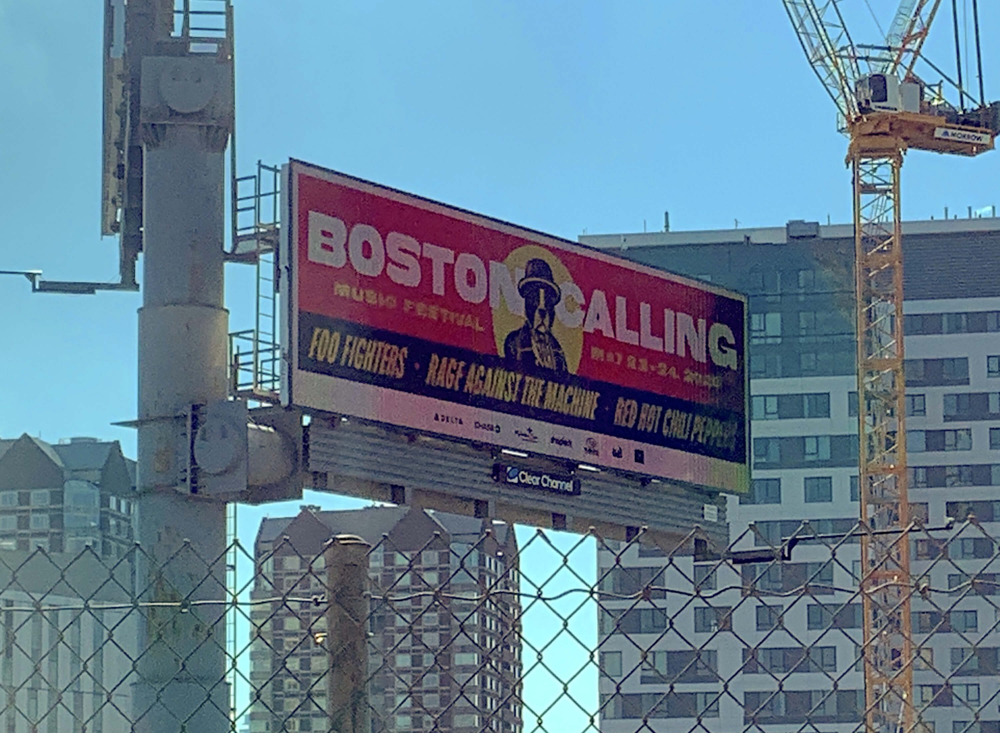

boston calling
WEB DESIGN, SOCIAL MEDIA & ADVERTISING, ON-SITE DESIGN
For the 2020 festival, Boston Calling had a new style guide that was a complete 180 from the prior year. This brand was grungy, bold, and leaned into the rocker vibes that are necessary for a lineup headlined by Foo Fighters, Red Hot Chili Peppers, and Rage Against the Machine.
These new brand guidelines meant the website needed some tweaks to align with new colors, typography, and textures, so we started with a full re-skin of the website we had designed for Boston Calling in 2019.
  From Printed Admat to Instagram Posts
Once again, our team was the main source of content creation for the festival’s social media. This year our target demographic was far different from the previous year. These big name rock bands weren’t attracting the same young audience, so this time our creative had to speak to an older generation.
Our goal with creative was to paint a picture of the festival’s full experience and create a sense of missing out if someone were not to attend (now a bit ironic due to COVID-19). We worked to make socials for the big lineup announcement, perfected the full lineup poster, and created content meant to stress the speed at which tickets were selling out.
Billboards Across Boston
A piece of new creative for the 2020 festival was a series of digital billboards posted over various highways in the Boston area. To catch the attention of potential fans making their commute into the city, we kept it simple and made sure the headliner names were big, bold, and easily digestible for those driving by.
😔 An Unfortunate Postponement
Due to the ongoing COVID-19 pandemic, Boston Calling 2020 has been postponed until Spring 2021. This postponement means that numerous pieces of the puzzle that were created for the festival have yet to reach the public eye (including credentials, signage, graphics for on-site activities, etc). If and when those assets become public, they will be shared here.